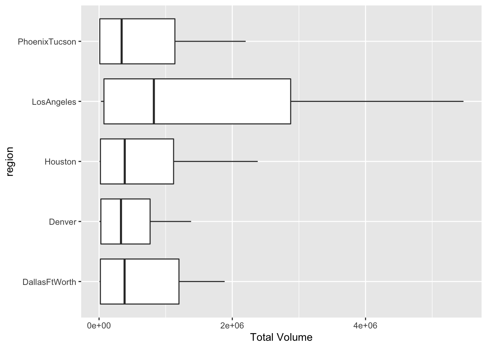
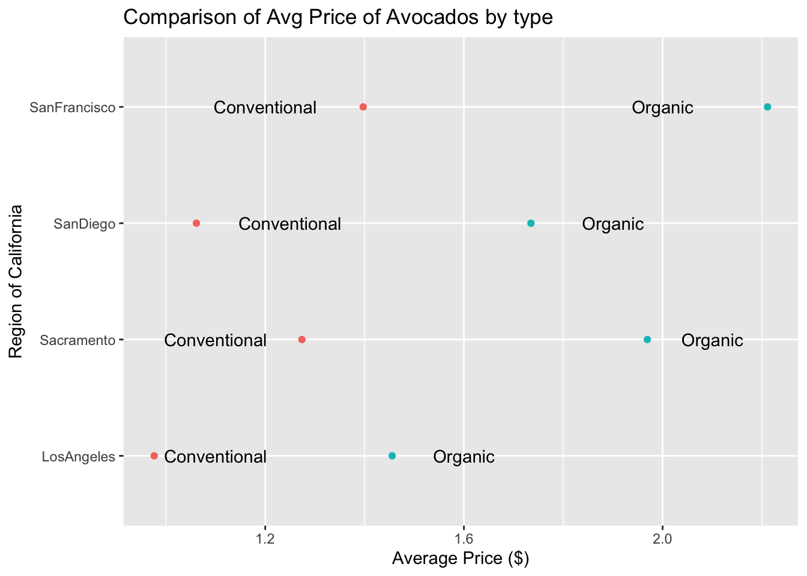
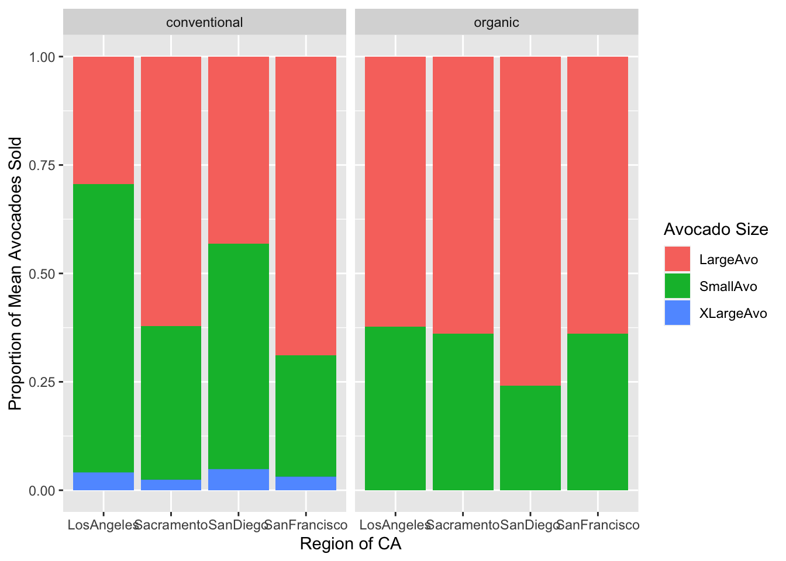

library(tidyverse)
library(here)
library(tidyr)
avocado <- read_csv(here("supporting_artifacts",
"learning_targets",
"Lab 4",
"avocado.csv")) |>
rename("SmallAvo" = `4046`,
"LargeAvo" = `4225`,
"XLargeAvo" = `4770`)Lab 4
Data Import and Packages
Question 1
This data set represents weekly retail data for Hass Avocados sold from 2015 to 2018. This data set includes the date, average price of a single avocado, the type of avocado, year, city or region, total volume of avocados sold, and total number of avocados sold by product look up number.
Question 2
#Question 2
region <- data.frame(region =
c("West",
"Northeast",
"SouthCentral",
"Southeast",
"GreatLakes",
"Plains",
"Midsouth",
"WestTexNewMexico"))
regions <- semi_join(avocado, region)
state <- data.frame(region = c("California", "NewYork", "SouthCarolina"))
states <- semi_join(avocado, state)
metro <- avocado |>
filter(region != "TotalUS") |>
anti_join(regions) |>
anti_join(states)Question 3
#Question 3
q3 <- regions |>
group_by(region) |>
filter(type == "organic", year == 2017) |>
select(region, year, SmallAvo) |>
summarize(across(.cols = everything(), mean, na.rm = TRUE))
q3# A tibble: 8 × 3
region year SmallAvo
<chr> <dbl> <dbl>
1 GreatLakes 2017 3821.
2 Midsouth 2017 3517.
3 Northeast 2017 17469.
4 Plains 2017 3181.
5 SouthCentral 2017 32398.
6 Southeast 2017 5380.
7 West 2017 35287.
8 WestTexNewMexico 2017 2175.slice_max(q3, order_by = SmallAvo)# A tibble: 1 × 3
region year SmallAvo
<chr> <dbl> <dbl>
1 West 2017 35287.The Westregion sold the most small, organic Hass avocados on average in 2017.
Question 4
#Question 4
q4 <- avocado |>
separate(Date, into = c("Year", "Month", "Day")) |>
group_by(Month) |>
select(Month, `Total Volume`) |>
summarize(across(.cols = everything(), mean, na.rm = TRUE))
q4# A tibble: 12 × 2
Month `Total Volume`
<chr> <dbl>
1 01 903565.
2 02 1018825.
3 03 884505.
4 04 880194.
5 05 972715.
6 06 929340.
7 07 859048.
8 08 803686.
9 09 753319.
10 10 680394.
11 11 679607.
12 12 774630.slice_max(q4, order_by = `Total Volume`)# A tibble: 1 × 2
Month `Total Volume`
<chr> <dbl>
1 02 1018825.February was the month with the highest total average volume of avocado sales.
Question 5
#Question 5
top5 <- metro |>
group_by(region) |>
select(`Total Volume`, region) |>
summarize(across(.cols = everything(), .fns = mean)) |>
slice_max(order_by = `Total Volume`, n = 5)
top5box <- metro |>
semi_join(top5, by = "region")
ggplot(data = top5box, mapping = aes(x = `Total Volume`, y = region)) +
geom_boxplot()
Question 6
#Question 6
cali <- data.frame(region = c("Sacramento", "LosAngeles", "SanDiego", "SanFrancisco"))
california <- semi_join(avocado, cali)
differences <- california |>
pivot_wider(names_from = region, values_from = AveragePrice) |>
group_by(type) |>
select(type, LosAngeles, SanFrancisco,
Sacramento, SanDiego) |>
summarize(across(.cols = everything(), .fns = mean, na.rm = TRUE)) |>
pivot_longer("LosAngeles":"SanDiego", names_to = "Cali_Region", values_to = "Avg Price")
differences# A tibble: 8 × 3
type Cali_Region `Avg Price`
<chr> <chr> <dbl>
1 conventional LosAngeles 0.976
2 conventional SanFrancisco 1.40
3 conventional Sacramento 1.27
4 conventional SanDiego 1.06
5 organic LosAngeles 1.46
6 organic SanFrancisco 2.21
7 organic Sacramento 1.97
8 organic SanDiego 1.73 ggplot(data = differences, mapping = aes(x = `Avg Price`, y = Cali_Region, color = type)) +
geom_point() +
labs(title = "Comparison of Avg Price of Avocados by type",
y = "Region of California", x = "Average Price ($)") +
annotate("text", y = 1, x = 1.1, label = "Conventional") +
annotate("text", y = 2, x = 1.1, label = "Conventional") +
annotate("text", y = 3, x = 1.25, label = "Conventional") +
annotate("text", y = 4, x = 1.2, label = "Conventional") +
annotate("text", y = 1, x = 1.6, label = "Organic") +
annotate("text", y = 2, x = 2.1, label = "Organic") +
annotate("text", y = 3, x = 1.9, label = "Organic") +
annotate("text", y = 4, x = 2, label = "Organic") +
theme(legend.position = "none")
Question 7
#Question 7
proportions <- california |>
pivot_longer(SmallAvo:XLargeAvo, names_to = "Avocado Size", values_to = "NumAvoSold") |>
group_by(region, type) |>
mutate(Frequency = NumAvoSold / sum(NumAvoSold))
ggplot(data = proportions, mapping = aes(x = region, y = Frequency, fill = `Avocado Size`)) +
geom_col() +
facet_wrap(~type) +
labs(x = "Region of CA", y = "Proportion of Mean Avocadoes Sold")